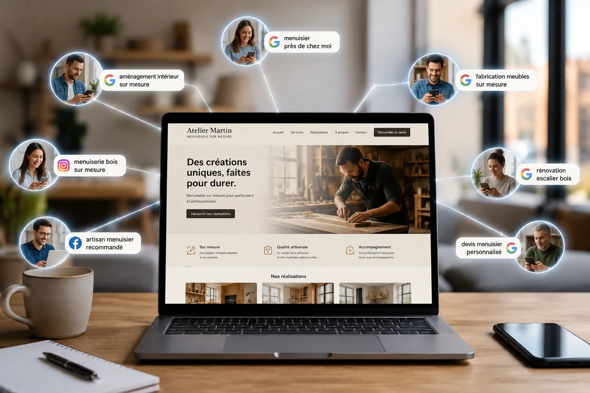

On entend encore des professionnels dire qu'ils n'ont pas besoin d'un site internet, que le bouche à oreille suffit, que leur page Instagram fait le travail. C'est compréhensible. Mais c'est faux. En 2026, ne pas avoir de site c'est choisir délibérément de rater une partie de vos clients potentiels.
La façon dont les gens cherchent un prestataire a changé
Il y a dix ans, quelqu'un qui cherchait un coiffeur, un plombier ou un coach sportif demandait à ses proches. Aujourd'hui, le premier réflexe c'est Google. On sort son téléphone, on tape ce qu'on cherche, et on appelle l'un des premiers résultats.
Ce comportement touche tous les secteurs et toutes les tranches d'âge. Les moins de 40 ans ne consultent pratiquement plus les Pages Jaunes. Les plus de 50 ans ont adopté Google Maps pour trouver des professionnels locaux. Si vous n'êtes pas dans ces résultats, vous n'existez pas pour eux.
Le bouche à oreille a des limites réelles
Le bouche à oreille reste l'un des meilleurs canaux d'acquisition. Un client recommandé arrive avec une confiance déjà établie, il est plus facile à convaincre et souvent plus fidèle. Mais il a une limite fondamentale : il ne fonctionne que dans votre réseau existant.
Il ne touche pas les personnes qui viennent d'arriver dans votre ville. Il ne touche pas ceux qui n'ont personne à qui demander. Il ne touche pas ceux qui cherchent un professionnel un dimanche soir quand personne n'est disponible pour répondre à leur message. Votre site, lui, est disponible 24h/24, 7j/7, pour tout le monde.
Les réseaux sociaux ne remplacent pas un site
Instagram, Facebook, TikTok : ce sont des outils de visibilité, pas des sites professionnels. Plusieurs raisons à ça.
Vous ne possédez pas vos réseaux sociaux. Si Instagram ferme votre compte ou change ses règles, vous perdez tout du jour au lendemain. Votre site, lui, vous appartient entièrement.
Google n'indexe pas les réseaux sociaux de la même façon qu'un site. Votre page Instagram n'apparaîtra pas quand quelqu'un tape "coiffeur Lyon 3" ou "coach sportif Villeurbanne".
Enfin, un réseau social ne donne pas la même image de sérieux qu'un site professionnel. Beaucoup de clients, surtout dans les secteurs B2B ou les prestations haut de gamme, vérifient systématiquement si vous avez un site avant de vous contacter.
Un site travaille pour vous quand vous ne travaillez pas
C'est l'argument le plus concret. Un client potentiel tombe sur votre site à 23h un mercredi. Il lit vos prestations, regarde vos réalisations, comprend vos tarifs, et remplit votre formulaire de contact. Le lendemain matin, vous avez une demande dans votre boite mail sans avoir rien fait.
Sans site, ce client potentiel aurait abandonné faute d'information, ou serait allé chez un concurrent qui avait un site. C'est ce qui se passe chaque jour pour les professionnels sans présence web.
Un site vitrine bien fait, c'est un commercial qui travaille pour vous à toute heure, sans salaire.
Un site renforce votre crédibilité
Quand quelqu'un compare deux professionnels, l'un avec un site soigné et l'autre sans, il choisit presque toujours celui avec le site. Pas parce que le site prouve la qualité du travail, mais parce qu'il prouve le sérieux de la démarche.
Un site dit implicitement que vous avez investi dans votre image professionnelle, que vous prenez votre activité au sérieux, que vous êtes là sur le long terme. C'est un signal de confiance fort, surtout pour les nouveaux clients qui ne vous connaissent pas encore.
Ce qu'un site vitrine apporte concrètement
- Des clients qui vous trouvent seuls, sans que vous ayez besoin de les démarcher.
- Une présence locale sur Google quand quelqu'un cherche votre métier dans votre ville.
- Un espace pour présenter votre travail : portfolio, réalisations, témoignages clients.
- Des informations toujours disponibles : tarifs, horaires, zone d'intervention, contact.
- Une image professionnelle qui rassure les clients avant même qu'ils vous aient contacté.
Et si je n'ai pas le budget pour un site ?
C'est la question que beaucoup se posent, et c'est légitime. La réponse honnête : un site vitrine sérieux coûte à partir de 450€ selon le projet. C'est un investissement, pas une dépense. Si ce site vous ramène un seul nouveau client, il est souvent rentabilisé.
Si vous préférez ne pas débourser cette somme d'un coup, des formules d'abonnement existent à partir de 39€ par mois. Mais dans tous les cas, le site est payé. L'abonnement couvre uniquement l'hébergement et la maintenance après livraison, c'est une option, pas un remplacement du paiement du site.
La vraie question n'est pas "est-ce que je peux me permettre un site". C'est "est-ce que je peux me permettre de ne pas en avoir".